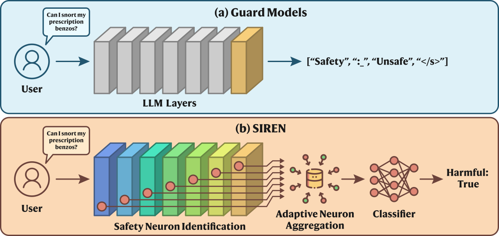

This article discusses content safety and refers to datasets that contain harmful language.
Introduction
Every deployed language model faces the same content safety problem: users can submit harmful prompts, and the model can generate harmful responses. The mainstream defense is a guard model, a separate model that reads a prompt or a response and labels it safe or unsafe. Guard models such as Llama Guard, WildGuard and Qwen3Guard are fine-tuned from open-source LLM backbones on safety data, and they make their decision as a generative task: the model decodes the label from its final layer, token by token.
That design reads the model only at its final layer. Interpretability research has shown that the internal representations of language models encode specialized features, and that using them improves classification. Several studies have also found that these representations encode fine-grained concepts for content safety, from harmfulness directions in the latent space to signals for detecting adversarial prompts. These findings had not been turned into a practical safeguard, so we asked whether internal representations can be used to build a better harmfulness detector.
SIREN, short for Safeguard with Internal REpresentatioN, answers this in two stages. First, it uses linear probing to locate the features in each layer that carry the most information about content safety. We call these the layer's safety neurons. Second, it aggregates the safety neurons of all layers, weighting each layer by how well its probe performed on validation data, and trains a lightweight classifier on the result. The language model itself is never modified, so SIREN attaches to any transformer-based LLM as a plug-in component.

We evaluate SIREN against the strongest open-source guard models on accuracy, generalization and efficiency. On detection accuracy, SIREN trained on a general-purpose LLM outperforms the guard model fine-tuned from that same backbone, with 250 times fewer trainable parameters. On generalization, it transfers to a benchmark of reasoning traces and to streaming detection, where content must be judged as it is generated, although it saw neither during training. On efficiency, it needs a single forward pass where a generative guard needs several.
Finding safety neurons and combining them across layers
A single forward pass through a transformer yields an internal representation at every layer. SIREN works with two kinds: the residual stream, which is the output of each layer, and the activations inside each layer's feed-forward network. Inputs have different lengths, so we average each layer's representation over tokens to obtain one vector per layer for the whole prompt or response.
Identifying safety neurons within each layer
Not every feature in these representations contributes to harmfulness detection. Some neurons encode the task, while others add noise or capture unrelated meaning. So for each layer separately, we train a linear probe on the pooled representations with the harmfulness labels of the training data. The probe is a logistic regression with an L1 penalty, which pushes most of its weights to zero. A linear probe is a reasonable instrument here because of the linear representation hypothesis, which holds that semantic concepts are often represented linearly in LLMs.
The magnitude of a trained weight tells us how much its neuron contributes to the probe's prediction. Within each layer we normalize the magnitudes so they sum to one, rank them, and keep the smallest top-ranked set whose cumulative weight exceeds a threshold. These are the layer's safety neurons. The selection is sparse: on Llama3.2-1B, which has 32,706 features across all its layers, a threshold of 0.6 keeps 571 neurons, under 2%, and a threshold of 0.9 keeps 4,214, about 13%.
| Backbone | 0.2 | 0.4 | 0.6 | 0.8 | 0.9 | 1.0 |
|---|---|---|---|---|---|---|
| Qwen3-0.6B | 82.6 | 83.7 | 85.5 | 85.6 | 84.9 | 84.9 |
| Llama3.2-1B | 81.1 | 83.4 | 84.0 | 85.3 | 85.8 | 85.7 |
Table 1 shows how the threshold affects accuracy. Performance rises as more neurons are admitted and then levels off between 0.6 and 0.9, the range we adopt. Keeping every neuron does no better. Safety-relevant information is concentrated in a small subset of neurons, and training on that subset gives both the accuracy and the parameter savings reported below.
Weighting and aggregating layers
Transformer language models build up their representations layer by layer, from low-level patterns to high-level semantics, and different layers contribute unequally to any particular task. SIREN therefore does two things when it combines layers. It gives each layer a weight between zero and one, computed from the validation F1 score of that layer's probe relative to the best and worst layers, so that informative layers count more. It then concatenates the weighted activations of every layer's safety neurons into one feature vector.
The classifier on top of this vector is a small multi-layer perceptron. The linear representation hypothesis justifies a linear probe within a single layer, but features concatenated across layers need not combine linearly, so a slightly more expressive head is appropriate. The layer weights act as a prior on layer importance; redundancy among the concatenated neurons is handled by the perceptron, which learns to combine complementary signals. In deployment, SIREN captures per-layer hidden states through forward hooks during one inference pass, applies the stored neuron indices and layer weights, and returns a harmfulness score from the trained classifier.
| Backbone | Aggregation | ToxicChat | OpenAI Mod. | Aegis | Aegis 2.0 | WildGuard | SafeRLHF | BeaverTails | Avg. |
|---|---|---|---|---|---|---|---|---|---|
| Qwen3-0.6B | Uniform | 81.3 | 87.5 | 81.8 | 81.1 | 85.4 | 90.7 | 82.3 | 84.3 |
| Adaptive | 81.6 | 91.3 | 82.4 | 82.1 | 86.5 | 91.6 | 83.5 | 85.6 | |
| Llama3.2-1B | Uniform | 79.9 | 88.4 | 81.4 | 81.6 | 86.0 | 91.3 | 82.6 | 84.4 |
| Adaptive | 80.0 | 92.9 | 82.1 | 82.7 | 86.5 | 92.0 | 83.7 | 85.7 |
Table 2 isolates the effect of the layer weights. Adaptive weighting beats uniform aggregation on every benchmark for both backbones, by 1.3 points on average, with the largest gains on OpenAI Moderation. The weights cost nothing extra to compute, because they come from the validation scores of probes that have already been trained.
What we find
Detection accuracy against guard models
We compare SIREN with LlamaGuard3 (1B and 8B) and Qwen3Guard (0.6B and 4B), the latter being the strongest open guard at the time of writing. Both guard families are fine-tuned from open general-purpose backbones, so we train SIREN on exactly those backbones: Llama-3.2-1B and Llama-3.1-8B for LlamaGuard3, and Qwen3-0.6B and Qwen3-4B for Qwen3Guard. Each comparison therefore pits a readout of a general-purpose model against a guard fine-tuned from the same model, which isolates the effect of our approach from the effect of safety fine-tuning.
SIREN is trained on the training splits of seven safety benchmarks that cover both prompt-level and response-level harm: ToxicChat, OpenAI Moderation, Aegis, Aegis 2.0, WildGuard, SafeRLHF and BeaverTails, about 237,000 examples in total with an 80/20 train/validation split. Following standard practice, harmfulness detection is a binary task, with multi-category taxonomies collapsed to harmful versus safe, and we report macro-F1 to account for class imbalance. Guard models are run with their official evaluation pipelines.
| Backbone | Method | ToxicChat | OpenAI Mod. | Aegis | Aegis 2.0 | WildGuard | SafeRLHF | BeaverTails | Avg. |
|---|---|---|---|---|---|---|---|---|---|
| Qwen3-0.6B | SIREN | 81.6 | 91.3 | 82.4 | 82.1 | 86.5 | 91.6 | 83.5 | 85.6 |
| Qwen3Guard-0.6B | 82.0 | 75.9 | 78.8 | 82.0 | 89.1 | 86.9 | 77.1 | 81.7 | |
| Llama3.2-1B | SIREN | 80.0 | 92.9 | 82.1 | 82.7 | 86.5 | 92.0 | 83.7 | 85.7 |
| LlamaGuard3-1B | 63.3 | 67.5 | 59.5 | 72.6 | 78.6 | 83.3 | 70.0 | 70.7 | |
| Qwen3-4B | SIREN | 83.5 | 91.2 | 82.9 | 83.4 | 88.3 | 93.2 | 84.3 | 86.7 |
| Qwen3Guard-4B | 84.9 | 78.3 | 78.2 | 82.5 | 90.6 | 89.2 | 80.1 | 83.4 | |
| Llama3.1-8B | SIREN | 83.1 | 92.0 | 82.9 | 82.9 | 86.7 | 92.5 | 83.8 | 86.3 |
| LlamaGuard3-8B | 72.2 | 85.3 | 67.1 | 78.0 | 81.3 | 86.2 | 68.8 | 77.0 |
SIREN has the higher average on all four backbone pairs, from 0.6B to 8B parameters. The best SIREN, on Qwen3-4B, reaches 86.7 against 83.4 for Qwen3Guard-4B. The gains are largest where the guard is weakest: on Llama3.2-1B, SIREN scores 85.7 against 70.7 for LlamaGuard3-1B. Reading across the benchmarks, the Qwen3Guard models keep a small lead on ToxicChat and WildGuard, while SIREN leads everywhere else, by wide margins on OpenAI Moderation, Aegis and BeaverTails.

Figure 2 looks past the F1 scores at the balance between precision and recall. Each point is one model on one benchmark, and the dashed diagonal marks equal precision and recall. SIREN's points cluster along that line on every benchmark. The guard models scatter: Qwen3Guard-0.6B reaches 95% recall on SafeRLHF but only 63% on Aegis, and LlamaGuard3-1B shows 90% precision but 54% recall on BeaverTails, an overly conservative rule for that dataset. Earlier safety evaluations have reported the same instability in fine-tuned guards. We speculate that a general-purpose model, having seen a wide range of safety-related text during pretraining, already encodes a fairly consistent notion of harmfulness, and that reading it out directly avoids the policy biases that safety fine-tuning on particular datasets can introduce.
Generalization to reasoning traces and streaming detection
A classifier trained on the final layer can latch onto surface features that hold within its training distribution and fail under distribution shift. To test whether SIREN, which reads many layers, holds up on data it never saw, we evaluate on Think, a test-only benchmark from the Qwen3Guard release. Think was built by prompting three reasoning models, a DeepSeek-distilled Llama3, Qwen3 and GLM-4, with harmful prompts and manually annotating their reasoning traces and responses for safety violations.

SIREN outperforms the guard models on traces from all three reasoning models (Figure 3), with an average improvement of 11.2 F1 points for the 8B-size pair. The contrast is sharpest at the small end: LlamaGuard3-1B falls to around chance level, while SIREN on Llama3.2-1B stays close to its larger counterparts. This suggests that what SIREN reads from the representations generalizes beyond the surface patterns of its training sets.
Streaming detection is a harder test, in which harmful content has to be flagged while the text is still being generated, token by token. Open guard models judge whole sequences, and the Qwen3Guard release built a dedicated streaming variant with architectural changes and token-level supervision to handle this case. SIREN needs no changes. To score a prefix, we average the safety neuron activations over the tokens generated so far and apply the same classifier, with no retraining of the LLM, the probes or the classifier.

We follow the Qwen3Guard-Stream protocol. Think marks the span where each trace becomes unsafe, and we measure whether a detector has fired by the end of that span, and then within grace windows extending up to 256 tokens beyond it. In Figure 4, both SIREN models detect more harmful traces than both streaming guards at every position, from the timely cut-off through the longest grace period. The smaller backbone does better than the larger one in streaming mode, for SIREN and for Qwen3Guard-Stream alike. The Qwen3Guard report does not discuss this, and we do not claim an explanation; one plausible factor is that sentence-level safety features transfer more cleanly to prefixes in smaller models.

Figure 5 shows what this looks like on one trace. The user asks the model to say something harmful. While the model deliberates about what the user might want, SIREN keeps the harmfulness score low. The score turns upward as the reasoning settles on complying, and it stays high through the insulting statement in the response and the offer of another one. The transition happens at the point where the content changes, with no streaming supervision behind it.
Training and inference cost
Training SIREN updates only the probes and the classifier. On Qwen3-4B that is 14M trainable parameters, against the roughly 4B that Qwen3Guard-4B fine-tunes, a factor of about 250. Training SIREN on Qwen3-4B takes 6 GPU hours on an A100.
 (a) Trainable parameters
(a) Trainable parameters
 (b) Inference FLOPs per sample
(b) Inference FLOPs per sample
At inference, SIREN is a small classifier on representations that one forward pass through the base model already produces. A generative guard runs the same forward pass and then decodes its verdict, and every decoded token is another pass through the model. Figure 6b counts the operations under assumptions that favor the guard: a 128-token input, perfect reuse of the KV cache, and a verdict of only four tokens, which is what "Label: Unsafe" takes. Even then the guard costs about four times as much as SIREN. In practice guards are often run with longer outputs for stable behavior, and the gap widens.
Where safety is encoded

The per-layer probes also tell us where in the model the safety signal lives. In Figure 7, probe accuracy climbs through the early layers of Qwen3-4B, plateaus in the middle layers with a peak near 79%, and drops at the final layer. A single middle layer, read with nothing more than a linear probe, comes within 4 points of the fine-tuned guard, and it beats the final layer that guards decode from. This matches the hierarchical picture of transformers in which early layers capture lexical and syntactic features, middle layers build abstract semantic representations, including concepts like harmfulness and malicious intent, and the final layers convert those representations back into token space for next-token prediction. SIREN's cross-layer aggregation adds about 8 points on top of the best single layer, so the layers carry complementary information, and the adaptive layer weights are computed from exactly this spread in probe accuracy.
Because SIREN is a light classifier on frozen representations, SIREN instances trained on different backbones can also be combined. Stacking a small meta-classifier on the outputs of several instances, the best three-model ensemble (Qwen3-0.6B, Qwen3-4B and Llama3.2-1B) reaches 87.7 average F1, one point above the best single SIREN, and ensembles that mix the Qwen3 and Llama3 families tend to beat same-family pairs. An ensemble doubles inference cost relative to one SIREN, which still leaves it well below a single generative guard.

The same recipe applies to a guard model's own internals. Training SIREN on the representations of the fine-tuned guards improves every one of them on every benchmark (Figure 8): Qwen3Guard-4B rises from 83.4 to 87.6 average F1, and LlamaGuard3-8B from 77.0 to 87.1, so a guard's own middle layers hold accuracy that its final-layer verdict does not use.
Discussion
Safety-relevant information is encoded throughout a language model's layers, and a sparse set of neurons from those layers, weighted by layer and read by a small classifier, makes a better harmfulness detector than decoding a verdict from the final layer. SIREN outperforms the guard fine-tuned from the same backbone and carries over to reasoning traces and streaming detection it was never trained on, at a fraction of the training and inference cost.
Two limitations bound the current work. The neuron selection relies on the linear representation hypothesis, so architectures that depart from the standard transformer, or concepts that are not linearly separable within a layer, may need a different probe. And we study binary harmfulness, following standard benchmark practice; the framework supports multi-label classification, and extending it to fine-grained safety taxonomies is a direction for future work. The datasets we use contain toxic and hateful language by design, and a detector built on an LLM's representations can inherit biases from that model's pretraining data, which remains an open problem for LLM-based safety classifiers generally. The full paper gives the mathematical formulation, the hyperparameter search, the ensemble results and the FLOPs calculation.